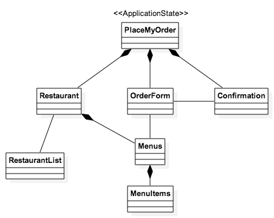
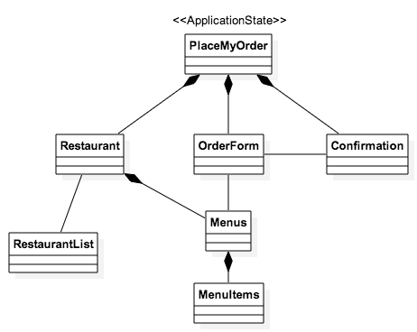

The first step in putting together a CanJS app is sketching out the various
states of your application, as you understand them at the moment
(requirements are always subject to change!),
and any supporting elements you might need.
We’ll be building a small application called "PlaceMyOrder". PlaceMyOrder is a
website that lets you select from available restaurants in your area, view their
menus, and purchase items for delivery. For this sample application, we’ll keep
things pretty simple. We won’t worry about registration, authentication, or
payment processing. We’re just going to create an application with three states:
Restaurant
Order Form
Confirmation
And a few supporting objects:
Menus
Menu Items
Restaurant List
The following pseudo UML diagram outlines the elements that comprise up our application:

Constructors in CanJS
Before we work with any of the objects in CanJS, it will be helpful for us to
understand can.Construct. We won't be working
with can.Construct directly. However, many of the objects in CanJS are derived from
can.Construct. Understanding it, therefore, will make it easier for you to understand the
concepts we're going to cover.
can.Construct provides a way to easily use the power of prototypal
inheritance without worrying about hooking up all the particulars
yourself. Without going into exhaustive detail, can.Construct contains
a few functions we'll encounter frequently in other objects:
Prototype
init
Static
extend
We'll look at the extend function first.
The extend function
can.Construct's extend function is used to create
"constructor functions". Constructor functions create instances of objects.
The extend function can take up to three arguments:
name: string
staticProperties: object
instanceProperties: object
The extend function behaves differently depending on the number of arguments you
pass it. The name and staticProperties arguments are optional. For example, if
you pass it one argument, it will be use the value you pass it to set its
instanceProperties. If you pass it two arguments, it uses the first to set its
staticProperties and the second to set its instanceProperties. Finally, if
you pass in all three arguments, the first will set its name, the second its
staticProperties, and the third its instanceProperties.
This pattern will apply to all objects in CanJS that have an extend function.
For example, if we only want to set staticProperties we must call the
function as follows:
can.Construct.extend({
// Static properties here
}, {
// Blank object as second parameter
});
The init function
The init function is called whenever a new instance of a
can.Construct is created. Init is where the bulk of your initialization code
should go. Inside of the init function, the this keyword will refer to the
new instance and this will contain the instance properties you pass to the
constructor. A common thing to do in init is save the arguments passed into
the constructor. An example is below:
var Person = can.Construct.extend({
init: function(first, last) {
this.first = first;
this.last = last;
}
});
var actor = new Person('Abe', 'Vigoda');
In this Chapter
can.ConstructThe first step in putting together a CanJS app is sketching out the various states of your application, as you understand them at the moment (requirements are always subject to change!), and any supporting elements you might need.
We’ll be building a small application called "PlaceMyOrder". PlaceMyOrder is a website that lets you select from available restaurants in your area, view their menus, and purchase items for delivery. For this sample application, we’ll keep things pretty simple. We won’t worry about registration, authentication, or payment processing. We’re just going to create an application with three states:
And a few supporting objects:
The following pseudo UML diagram outlines the elements that comprise up our application:

Constructors in CanJS
Before we work with any of the objects in CanJS, it will be helpful for us to understand can.Construct. We won't be working with
can.Constructdirectly. However, many of the objects in CanJS are derived fromcan.Construct. Understanding it, therefore, will make it easier for you to understand the concepts we're going to cover.can.Constructprovides a way to easily use the power of prototypal inheritance without worrying about hooking up all the particulars yourself. Without going into exhaustive detail,can.Constructcontains a few functions we'll encounter frequently in other objects:We'll look at the extend function first.
The extend function
can.Construct'sextendfunction is used to create "constructor functions". Constructor functions create instances of objects. The extend function can take up to three arguments:name: stringstaticProperties: objectinstanceProperties: objectThe
extendfunction behaves differently depending on the number of arguments you pass it. ThenameandstaticPropertiesarguments are optional. For example, if you pass it one argument, it will be use the value you pass it to set itsinstanceProperties. If you pass it two arguments, it uses the first to set itsstaticPropertiesand the second to set itsinstanceProperties. Finally, if you pass in all three arguments, the first will set its name, the second itsstaticProperties, and the third itsinstanceProperties.This pattern will apply to all objects in CanJS that have an extend function. For example, if we only want to set
staticPropertieswe must call the function as follows:The init function
The
initfunction is called whenever a new instance of acan.Constructis created. Init is where the bulk of your initialization code should go. Inside of the init function, thethiskeyword will refer to the new instance andthiswill contain the instance properties you pass to the constructor. A common thing to do in init is save the arguments passed into the constructor. An example is below:‹ Setup Getting to Know Components ›